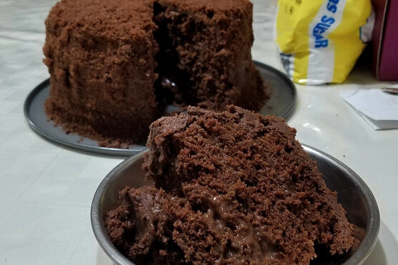

Food | 8/22/21
Who doesn’t love a classic cake that’s full of chocolatey goodness and layers of soft fluffy sponge?!

Food | 8/15/21
Boston is full of some amazing restaurants and these are our top places for you to try next!
Food | 8/8/21
As we try our best not to become addicted to coffee, we often switch up our morning drinks with non coffee options.
Food | 8/1/21
As we are in the midst of summer, the last thing you want to do is turn the oven on on a hot summer day, so, we’re back with a no-bake dessert!

Fun | 7/25/21
Are you tired of getting stains on your furniture or damaging your tables with your favorite beverages? Well, we have a solution for you - coasters!
Food | 7/18/21
You’ve heard of the extremely spicy Buldak ramen thats been floating around for a while now but have you heard of Buldak chicken!?
Food | 6/20/21
With this hot summer weather that's got us cranking up the AC, we figured it was the perfect time for us to introduce some of our latest and greatest summer treats to beat the heat!
Fun | 6/13/21
We love collecting cute ceramic pieces so we took on the challenge of making our own with air dry clay!
Food | 6/6/21
Having had a recent craving for some fresh seafood and also a chance for us to go on a small trip with friends, we decided to take a one day food tour through Portland, Maine to check out some of their most popular foods!
Food | 5/30/21
A few months ago, we picked up one of the most popular types of drinks in the world--coffee.
Food | 5/23/21
Having seen a bunch of themed macarons on Pinterest, I knew I had to give it a shot!
Food | 5/16/21
Delivery and takeout spots have become our best friend this past year and we’ve compiled a list of our favorite places!